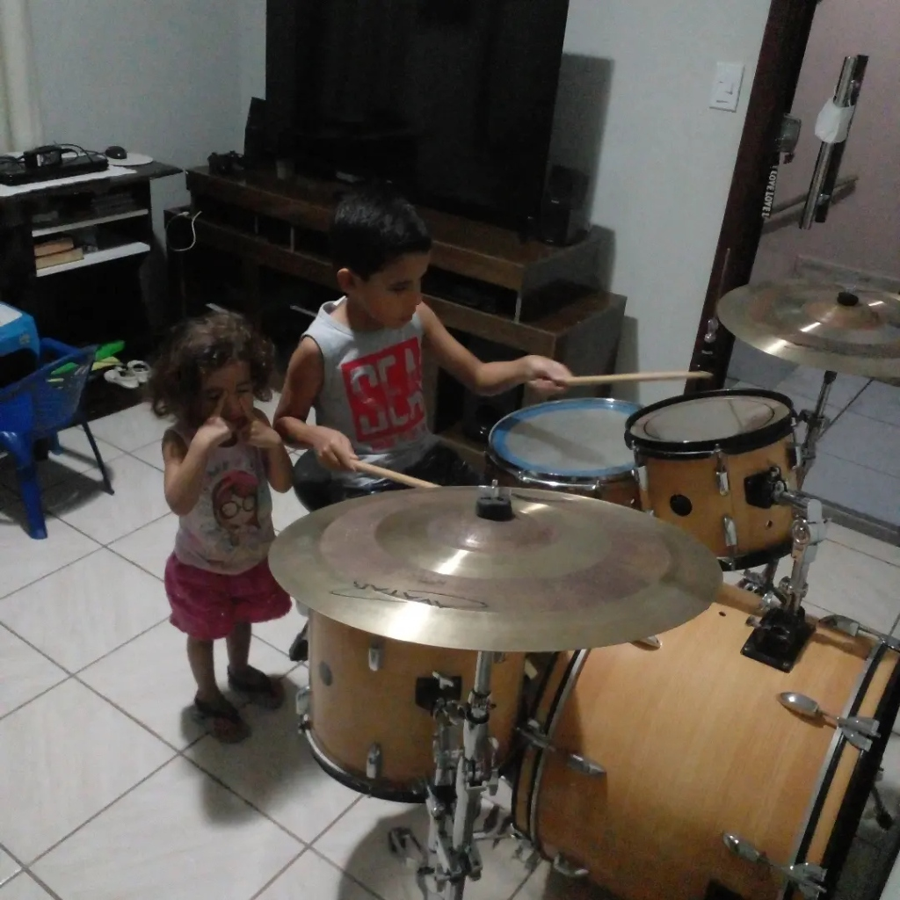
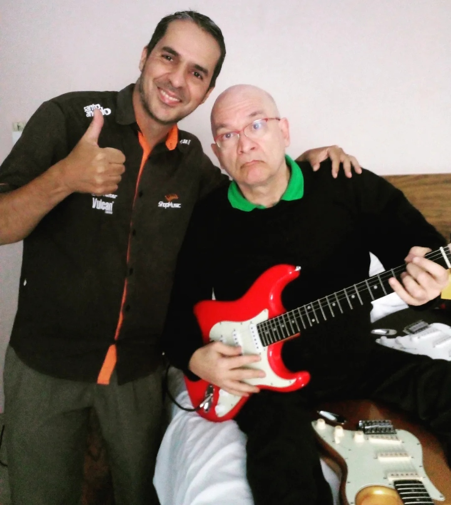
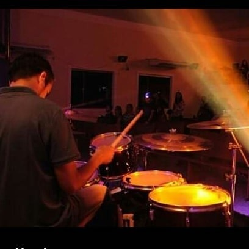

Aulas particulares para crianças e adultos, do básico ao intermediário, em Teófilo Otoni–MG.
Horários flexíveis • Fale direto com o professor
Seja para realizar o sonho de tocar bateria, desenvolver ritmo e coordenação motora, aprender suas músicas favoritas ou evoluir tecnicamente: as aulas são 100% adaptadas ao seu nível, idade e ritmo de aprendizagem. Estou com você em cada passo da sua jornada musical.
Nunca é tarde para viver a música! Temos alunos adultos e aposentados que começaram do absoluto zero e hoje tocam suas músicas favoritas com muito prazer e sem cobranças.
As aulas infantis utilizam uma didática lúdica, paciente e motivadora, que desenvolve foco, disciplina, coordenação motora e amor pela música desde a primeira sessão.
A coordenação não é um dom de nascença, é uma habilidade que se constrói com exercícios simples e graduais. Você vai se surpreender com o que suas mãos e pés farão em poucos minutos.
Aqui o foco é 100% prático e direto na bateria. Você aprende a teoria necessária tocando, no ritmo certo e sem apostilas chatas ou decoreba cansativa.



Atenção total para você evoluir de verdade.
Experiência de palco e ensino que faz a diferença.
Ajustamos as aulas à sua rotina, com facilidade.
Toque o que você gosta e mantenha a motivação.
Aprenda de forma simples, prática e musical.
Respeitamos seu tempo e celebramos cada conquista.
Assista à demonstração e sinta a energia, o groove e a pegada que você também vai desenvolver nas aulas práticas.
Quero fazer uma aulaSou o Prof. Márcio Machado, baterista, músico e professor apaixonado por ensinar. Uno minha experiência prática nos palcos a uma metodologia simples, leve e sem rodeios para ajudar você a realizar o sonho de tocar bateria, mesmo começando do absoluto zero.
As aulas respeitam o ritmo de cada aluno, tornando o aprendizado mais leve, motivador e transformador.
Veja o que dizem os alunos e pais sobre a evolução e a experiência prática nas aulas particulares.
“Meu filho estava tímido e sem muito foco. Depois que começou as aulas com o professor, além de aprender bateria com uma alegria contagiante, ganhou disciplina e autoconfiança. Só tenho a agradecer pela paciência e carinho!”
“Sempre tive o sonho de infância de tocar bateria, mas achava que já era tarde depois dos 35 anos. A didática dele quebrou todos os meus bloqueios. Em menos de 2 meses já estava acompanhando minhas bandas de Rock favoritas!”
“Professor incrível! Didática top, super paciente e parceiro demais. O estúdio é excelente e a flexibilidade de horário me ajuda muito na correria do trabalho. Recomendo de olhos fechados para qualquer pessoa.”
Sem burocracia ou processos complicados. Em 4 passos você já está tocando seus primeiros ritmos.
Clique no botão e fale diretamente comigo para tirar dúvidas iniciais.
Diga sua idade, preferências musicais e se já possui alguma experiência.
Encontraremos o melhor dia e período (manhã, tarde ou noite) para sua rotina.
Pegue nas baquetas, sinta a vibração e comece sua jornada na bateria!
Confira as respostas para as perguntas mais comuns antes de começar suas aulas.
Não! Você não precisa comprar uma bateria para começar. Durante todas as aulas você utilizará a bateria completa e profissional do estúdio. Para treinar em casa, o professor orienta exercícios práticos que podem ser feitos com um simples pad de estudo e um par de baquetas.
Com certeza! A maioria dos alunos começa exatamente do absoluto zero, sem saber sequer como segurar as baquetas. O método é gradual, sem pressão e 100% focado em você se divertir e aprender no seu tempo.
Atendemos crianças a partir dos 6 a 7 anos de idade, adolescentes, jovens e adultos de qualquer idade. A metodologia é adaptada com linguagem e dinâmica próprias para cada faixa etária.
Sim! Uma grande parte dos nossos alunos são adultos que sempre tiveram vontade de tocar ou que buscam um hobby para aliviar o estresse do dia a dia. A bateria é uma excelente terapia mental e física.
As aulas particulares têm duração média de 50 a 60 minutos por encontro semanal, com aproveitamento máximo e instrução individualizada direta na bateria.
As aulas são realizadas presencialmente em estúdio próprio, climatizado e equipado em Teófilo Otoni — MG, com fácil acesso e estacionamento.
Dispomos de horários flexíveis de segunda a sábado (períodos matutino, vespertino e noturno). Consulte a grade atualizada diretamente pelo WhatsApp.
Para as primeiras aulas fornecemos todo o material e baquetas no estúdio. Conforme sua evolução, o professor orientará o modelo de baqueta mais confortável para suas mãos.
Os planos mensais, pacotes e opções de horários disponíveis são informados diretamente pelo professor no WhatsApp para encontrar a opção ideal para seu objetivo e disponibilidade.
Não guarde perguntas! É só me chamar no WhatsApp que converso pessoalmente com você.
Falar no WhatsApp